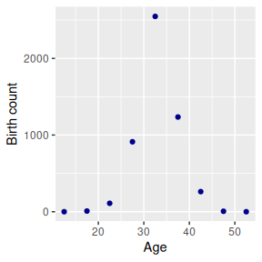
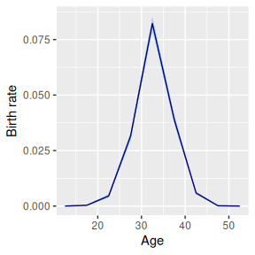
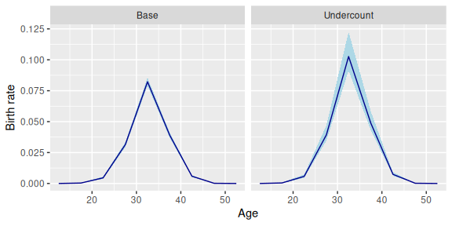
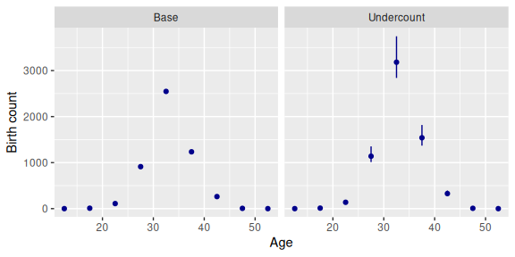
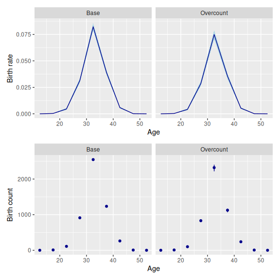
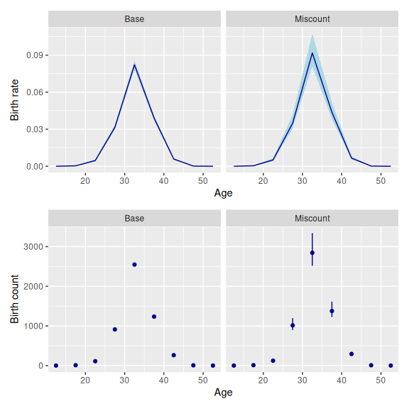
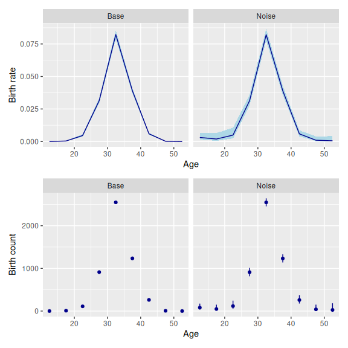
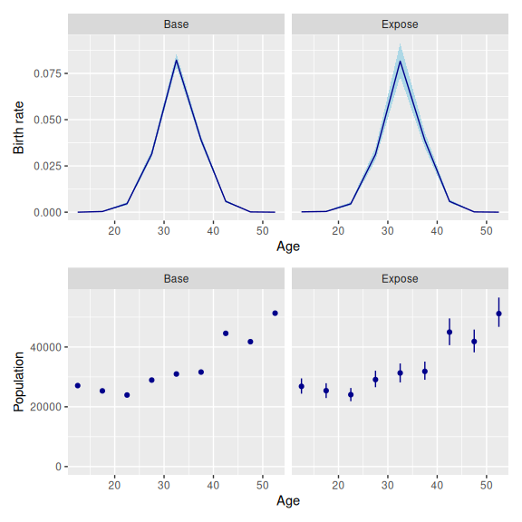
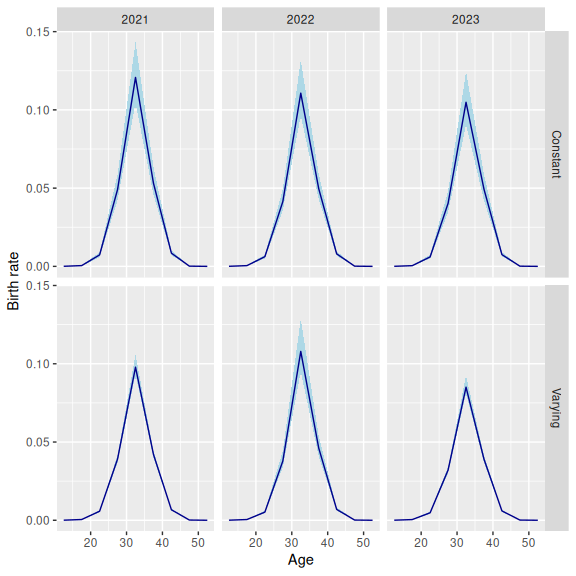
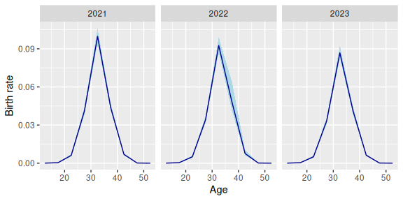

1 Introduction
By default, the Poisson, binomial, and normal models in bage assume that any measurement errors in the input data are small enough to be ignored. These models can, however, be extended to accommodate various types of measurement error. This is done by adding a “data model”—also referred to as a “measurement error model”—to the base model. The data models that have been implemented so far in bage are fairly generic: they aim to perform reasonably well on a wide range of applications, rather than performing optimally on any particular application. Future versions of bage will add some more specialised data models.
This vignette begins with an overview of the current menu of data models. It then shows how the simple models presented in the overview can be extended to deal with more complicated situations, and discusses forecasting and confidentialization.
The overview will use a model of births in a single Korean province in a single year. The input data is:
births
#> # A tibble: 9 × 3
#> age births popn
#> <chr> <int> <int>
#> 1 10-14 0 27084
#> 2 15-19 9 25322
#> 3 20-24 110 23935
#> 4 25-29 912 28936
#> 5 30-34 2547 30964
#> 6 35-39 1235 31611
#> 7 40-44 262 44567
#> 8 45-49 6 41774
#> 9 50-54 0 51312
Our base model treats the input data as error free. We specify and fit the base model as follows.
library(bage)
library(dplyr)
mod_base <- mod_pois(births ~ age,
data = births,
exposure = popn) |>
fit()
#> Building log-posterior function...
#> Finding maximum...
#> Drawing values for hyper-parameters...
mod_base
#>
#> ------ Fitted Poisson model ------
#>
#> births ~ age
#>
#> exposure: popn
#>
#> term prior along n_par n_par_free std_dev
#> (Intercept) NFix() - 1 1 -
#> age RW() age 9 9 1.27
#>
#> disp: mean = 1
#>
#> n_draw var_age optimizer
#> 1000 age nlminb
#>
#> time_total time_max time_draw iter converged
#> 0.14 0.05 0.04 15 TRUE
#> message
#> both X-convergence and relative convergence (5)The base model yields the following estimates for birth rates:

2 Current menu of data models
2.1 Overview
bage currently implements five generic data models:
| Model | Assumptions about measurement error | Poisson | Binomial | Normal |
|---|---|---|---|---|
| Miscount | Reported outcome has undercount and overcount | Yes | No | No |
| Undercount | Reported outcome has undercount | Yes | Yes | No |
| Overcount | Reported outcome has overcount | Yes | No | No |
| Noise | Reported outcome unbiased, but with positive and negative measurement errors | Yes* | No | Yes |
| Exposure | Reported exposure unbiased, but with positive and negative measurement errors | Yes* | No | No |
*Models with no dispersion term for rates.
2.2 Undercount model
The undercount data model assumes that each event or person in the target population has a non-zero chance of being left out of the reported total. In other words, inclusion probabilities are less than 1. The user supplies a prior for inclusion probabilities, which is parameterized using means and dispersions, with means restricted to values between 0 and 1.
More precisely, the undercount data model is \[\begin{align} y_i^{\text{obs}} & \sim \text{Binomial}(y_i^{\text{true}}, \pi_{g[i]}) \\ \pi_g & \sim \text{Beta}\left( \frac{m_g}{d_g}, \frac{1-m_g}{d_g} \right) \end{align}\] where
- \(y_i^{\text{obs}}\) is the observed value for the outcome variable in cell \(i\);
- \(y_i^{\text{true}}\) is the true value for the outcome variable in cell \(i\);
- \(\pi_{g[i]}\) is the inclusion probability for cell \(i\) (which may be shared across multiple cells);
- \(m_g\) is the mean for the prior governing \(\pi_g\); and
- \(d_g\) is the dispersion for the prior governing \(\pi_g\).
We assume, for the moment, that all cells share the same coverage probability, which is drawn from a distribution with mean 0.8 and dispersion 0.02.
prob_under <- data.frame(mean = 0.8, disp = 0.02)We use function `set_datamod_undercount to add an ‘undercount’ data model to our original base model, and then fit the new combined model
mod_under <- mod_base |>
set_datamod_undercount(prob = prob_under) |>
fit()
mod_under
#>
#> ------ Fitted Poisson model ------
#>
#> births ~ age
#>
#> exposure: popn
#> data model: undercount
#>
#> term prior along n_par n_par_free std_dev
#> (Intercept) NFix() - 1 1 -
#> age RW() age 9 9 1.19
#>
#> disp: mean = 1
#>
#> n_draw var_age optimizer
#> 1000 age nlminb
#>
#> time_total time_max time_draw iter converged message
#> 0.06 0.02 0.02 13 TRUE relative convergence (4)Calling augment() on the fitted model yields the usual estimates of the birth rate, shown in the .fitted and .expected columns, but also estimates of true births, in the .births column:
mod_under |>
augment()
#> ℹ Adding variable `.births` with true values for `births`.
#> # A tibble: 9 × 7
#> age births .births popn .observed .fitted
#> <chr> <int> <rdbl<1000>> <int> <dbl> <rdbl<1000>>
#> 1 10-14 0 0 (0, 1) 27084 0 3.4e-06 (1.3e-11, 8.5e-05)
#> 2 15-19 9 11 (9, 16) 25322 0.000355 0.00044 (2e-04, 0.00081)
#> 3 20-24 110 137 (120, 169) 23935 0.00460 0.0058 (0.0046, 0.0073)
#> 4 25-29 912 1140 (1016, 1362) 28936 0.0315 0.039 (0.034, 0.047)
#> 5 30-34 2547 3186 (2837, 3806) 30964 0.0823 0.1 (0.092, 0.12)
#> 6 35-39 1235 1540 (1378, 1853) 31611 0.0391 0.049 (0.043, 0.059)
#> 7 40-44 262 327 (291, 394) 44567 0.00588 0.0073 (0.0062, 0.009)
#> 8 45-49 6 7 (6, 11) 41774 0.000144 0.00017 (6e-05, 0.00037)
#> 9 50-54 0 0 (0, 1) 51312 0 1.5e-06 (1.3e-11, 5.3e-05)
#> # ℹ 1 more variable: .expected <rdbl<1000>>Estimated birth rates from the undercount model are higher than estimated birth rates from the base model, since the undercount model assumes that reported births understate true births.

Here are the estimates of births underlying the baseline and undercount models: 
The estimated coverage probability can be extracted using function components():
mod_under |>
components() |>
filter(term == "datamod")
#> # A tibble: 1 × 4
#> term component level .fitted
#> <chr> <chr> <chr> <rdbl<1000>>
#> 1 datamod prob prob 0.8 (0.67, 0.9)2.3 Overcount model
The overcount data model assumes that reported outcomes include counts of people or events that do not in fact come from the true population, or that have been double-counted. The expected size of the overcount equals the expected size of the true count, multiplied by an overcoverage rate.
More precisely, \[\begin{align} y_i^{\text{obs}} & = y_i^{\text{true}} + \epsilon_i \\ \epsilon_i & \sim \text{Poisson}( \kappa_{g[i]} \gamma_i w_i) \\ \kappa_g & \sim \text{Gamma}\left(\frac{1}{d_g}, \frac{1}{m_g d_g} \right) \end{align}\] where
- \(y_i^{\text{obs}}\) is the observed value for the outcome variable in cell \(i\);
- \(y_i^{\text{true}}\) is the true value for the outcome variable in cell \(i\);
- \(\gamma_i\) is the underlying rate for outcome \(y_i^{\text{true}}\);
- \(w_i\) is exposure in cell \(i\);
- \(\kappa_{g[i]}\) is the overcoverage rate for cell \(i\) (which may be shared across multiple cells);
- \(m_g\) is the mean for the prior governing \(\kappa_g\); and
- \(d_g\) is the dispersion for the prior governing \(\kappa_g\).
For the moment, we assume that all cells have the same overcoverage rate, which is drawn from a distribution with mean 0.1 and dispersion 0.05.
rate_over <- data.frame(mean = 0.1, disp = 0.05)We specify the overcount model using function set_datamod_overcount().
mod_over <- mod_base |>
set_datamod_overcount(rate = rate_over)Adding an overcount data model produces birth rate estimates that are lower than those of the base model, since the reported birth counts are assumed to be too high.

2.4 Miscount model
The miscount data model is a combination of the undercount and overcount models. It assumes that the reported outcome includes some undercount, and some overcount. The model is \[\begin{align} y_i^{\text{obs}} & = u_i + v_i \\ u_i & \sim \text{Binomial}(y_i^{\text{true}}, \pi_{g[i]}) \\ v_i & \sim \text{Poisson}( \kappa_{h[i]} \gamma_i w_i) \\ \pi_g & \sim \text{Beta}\left( \frac{m_g}{d_g}, \frac{1-m_g}{d_g} \right) \\ \kappa_h & \sim \text{Gamma}\left(\frac{1}{d_h}, \frac{1}{m_h d_h} \right) \end{align}\] where the variables have the same definitions as they do in the undercount and overcount models.
We need to specify priors for inclusion probabilities and overcoverage rates. We re-use the priors from the previous models.
mod_mis <- mod_base |>
set_datamod_miscount(prob = prob_under,
rate = rate_over)Our choice of priors implies more undercoverage than overcoverage, so our estimated birth rates, and estimated birth counts, are higher than those of the baseline model.

We use components() to extract estimates of the inclusion probability and overcount rate.
mod_mis |>
components() |>
filter(term == "datamod")
#> # A tibble: 2 × 4
#> term component level .fitted
#> <chr> <chr> <chr> <rdbl<1000>>
#> 1 datamod prob prob 0.8 (0.68, 0.9)
#> 2 datamod rate rate 0.098 (0.06, 0.15)2.5 Noise model
The noise model assumes that the reported outcome equals the true outcome plus some noise,
\[\begin{equation} y_i^{\text{obs}} = y_i^{\text{true}} + \epsilon_i. \end{equation}\]
The noise is assumed have an expected value of zero. Its distribution depends on the base model the noise data model is being applied to. If the base model is normal, then the noise is assumed to have a normal distribution, \[\begin{equation} \epsilon_i \sim \text{N}(0, s_{g[i]}^2) \end{equation}\]
If the base model is Poisson, then the noise is assumed to have a symmetric Skellam distribution, \[\begin{equation} \epsilon_i \sim \text{Skellam}(m_{g[i]}, m_{g[i]}) \end{equation}\] where \(m_g = \frac{1}{2} s_g^2\).
The Skellam distribution is derived from the Poisson distribution. If \(x_1 \sim \text{Poisson}(\mu_1)\), \(x_2 \sim \text{Poisson}(\mu_2)\), and \(y = x_1 + x_2\), then \(y \sim \text{Skellam}(\mu_1, \mu_2)\). If the two Poisson variates have the same expected value, than the Skellam distribution is symmetric, with single parameter \(\mu\), \(\text{E}[y] = 0\) and \(\text{var}[y] = 2 \mu\).
Note that unlike the undercount, overcount, and miscount data models, the noise data model has no unknown parameters.
To use the noise data model with a Poisson model, we need to set dispersion in the Poisson model to 0. Function set_datamod_noise() will do this for us, but it is good practice to make the change explicit:
mod_noise <- mod_base |>
set_disp(mean = 0) |>
set_datamod_noise(s = 50)Fitting this model yields the following estimates. 
If the outcome variable is subject to known biases, then measurement errors cannot be assumed to have mean zero. Before the noise data model can be used, the outcome variable must be de-biased, by subtracting estimates of the bias.
2.6 Exposure model
In some applications, the exposure variable has bigger measurement errors than the outcome variable. bage has an exposure data model to be used with Poisson base models.
The model is
\[\begin{equation} w_i^{\text{obs}} \sim \text{InvGamma}(2 + d_{g[i]}^{-1}, [1 + d_{g[i]}^{-1}] w_i^{\text{true}}) \end{equation}\]
where - \(w_i^{\text{obs}}\) is the observed value for exposure in cell \(i\); - \(w_i^{\text{true}}\) is the true value for exposure in cell \(i\); - \(w_i\) is exposure in cell \(i\); and - \(d_{g[i]}\) is the dispersion parameter for cell \(i\) (which may be shared across multiple cells).
The model contains no unknown parameters. Under the model \[\begin{align} E[w_i^{\text{obs}} \mid w_i^{\text{true}}] & = w_i^{\text{true}} \\ \text{var}[w_i^{\text{obs}} \mid w_i^{\text{true}}] & = d_{g[i]} ( w_i^{\text{true}})^2 \\ \text{cv}[w_i^{\text{obs}} \mid w_i^{\text{true}}] & = \sqrt{d_{g[i]}} \end{align}\] where ‘cv’ is the coefficient of variation, defined as the standard deviation, divided by the mean.
The exposure data model is specified using the cv. As with the noise data model, dispersion in the base model must be set to 0.
mod_expose <- mod_base |>
set_disp(mean = 0) |>
set_datamod_exposure(cv = 0.05)Along with estimates of birth rates, the model also yields estimates of the true population.

3 More complicated error specifications
In full-sized applications, we generally want inclusion probabilities, coverage rates, standard deviations, and coefficients of variation to vary across dimensions such as age, sex, and time. The data models implemented in bage allow this sort of variation.
We illustrate the use of varying data model parameters using a slightly extended version of our births model. We use a new dataset that includes a time variable:
births_time
#> # A tibble: 27 × 4
#> age time births popn
#> <chr> <int> <int> <int>
#> 1 10-14 2021 0 27208
#> 2 10-14 2022 0 27185
#> 3 10-14 2023 0 27084
#> 4 15-19 2021 3 25039
#> 5 15-19 2022 16 25276
#> 6 15-19 2023 9 25322
#> 7 20-24 2021 178 29008
#> 8 20-24 2022 120 26201
#> 9 20-24 2023 110 23935
#> 10 25-29 2021 1212 30826
#> # ℹ 17 more rowsWe create a new prior for inclusion probabilities where the mean and dispersion vary over time:
prob_under_time <- data.frame(time = c(2021, 2022, 2023),
mean = c(0.99, 0.8, 0.99),
disp = c(0.01, 0.02, 0.01))We implement one model with the old time-constant prior, and one with the new time-varying prior.
mod_timeconst <- mod_pois(births ~ age + time,
data = births_time,
exposure = popn) |>
set_datamod_undercount(prob = prob_under)
mod_timevarying <- mod_timeconst |>
set_datamod_undercount(prob = prob_under_time)
#> → Replacing existing "undercount" data model with new "undercount" data modelAs we would expect, these two models give different results.

Data model parameters can vary across more than one dimension. We set up a prior that varies across age and time. Rather than using different inclusion probabilities for every age group, however, we use one set for people aged 10-34, and one for people aged 35+. To implement this, we need to create a new, aggregated age group.
births_time <- births_time |>
mutate(agegp = if_else(age %in% c("10-14", "15-19",
"20-24", "25-29",
"30-34"),
"10-34",
"35+"))
prob_under_agetime <- data.frame(
time = c(2021, 2022, 2023, 2021, 2022, 2023),
agegp = c("10-34", "10-34", "10-34", "35+", "35+", "35+"),
mean = c(0.95, 0.95, 0.95, 0.95, 0.5, 0.95),
disp = c(0.01, 0.01, 0.01, 0.01, 0.1, 0.01))
mod_agetime <- mod_pois(births ~ age + time,
data = births_time,
exposure = popn) |>
set_datamod_undercount(prob = prob_under_agetime)The model assumes that births for women aged 35+ in 2022 were subject to an unusual degree of under-reporting. The results reflect that assumption.

4 Forecasting with data models
4.1 Data model parameters constant over time
Data models can be used in forecasting applications. Implementation is easiest with the data model does not contain any time-varying parameters, like the mod_timeconst constructed above:
mod_timeconst |>
fit() |>
forecast(label = 2024)
#> Building log-posterior function...
#> Finding maximum...
#> Drawing values for hyper-parameters...
#> `components()` for past values...
#> `components()` for future values...
#> `augment()` for future values...
#> # A tibble: 9 × 8
#> age time births .births popn .observed .fitted
#> <chr> <dbl> <dbl> <dbl> <int> <dbl> <rdbl<1000>>
#> 1 10-14 2024 NA NA NA NA 5.5e-05 (2e-05, 0.00015)
#> 2 15-19 2024 NA NA NA NA 0.00044 (0.00026, 0.00076)
#> 3 20-24 2024 NA NA NA NA 0.0061 (0.0038, 0.0091)
#> 4 25-29 2024 NA NA NA NA 0.041 (0.025, 0.059)
#> 5 30-34 2024 NA NA NA NA 0.11 (0.064, 0.16)
#> 6 35-39 2024 NA NA NA NA 0.047 (0.03, 0.07)
#> 7 40-44 2024 NA NA NA NA 0.0074 (0.0047, 0.011)
#> 8 45-49 2024 NA NA NA NA 0.00013 (6.8e-05, 0.00024)
#> 9 50-54 2024 NA NA NA NA 1.2e-05 (2.3e-06, 4.6e-05)
#> # ℹ 1 more variable: .expected <rdbl<1000>>If future values for population are supplied, then the forecast will include true and reported values for the outcome variable:
newdata_births <- data.frame(
age = c("10-14", "15-19", "20-24", "25-29", "30-34",
"35-39", "40-44", "45-49", "50-54"),
time = rep(2024, 9),
popn = c(27084, 25322, 23935, 28936, 30964,
31611, 44567, 41774, 51312))
mod_timeconst |>
fit() |>
forecast(newdata = newdata_births)
#> Building log-posterior function...
#> Finding maximum...
#> Drawing values for hyper-parameters...
#> `components()` for past values...
#> `components()` for future values...
#> `augment()` for future values...
#> # A tibble: 9 × 8
#> age time births .births popn .observed
#> <chr> <dbl> <rdbl<1000>> <rdbl<1000>> <dbl> <dbl>
#> 1 10-14 2024 1 (0, 5) 1 (0, 6) 27084 NA
#> 2 15-19 2024 9 (3, 18) 11 (4, 23) 25322 NA
#> 3 20-24 2024 117 (68, 178) 147 (85, 222) 23935 NA
#> 4 25-29 2024 943 (582, 1386) 1182 (731, 1733) 28936 NA
#> 5 30-34 2024 2602 (1598, 3893) 3246 (1977, 4824) 30964 NA
#> 6 35-39 2024 1194 (734, 1758) 1504 (914, 2206) 31611 NA
#> 7 40-44 2024 263 (151, 399) 329 (202, 487) 44567 NA
#> 8 45-49 2024 4 (1, 10) 5 (1, 12) 41774 NA
#> 9 50-54 2024 0 (0, 3) 0 (0, 4) 51312 NA
#> # ℹ 2 more variables: .fitted <rdbl<1000>>, .expected <rdbl<1000>>4.2 Data model parameters vary over time
When the data model contains parameters that vary over time, future values for these parameters must be specified. This is done when the data model is first created. Here, for, instance, we create a version of the prob_under_time prior that includes values for 2024.
prob_under_time_ext <- rbind(
prob_under_time,
data.frame(time = 2024,
mean = 0.95,
disp = 0.05))
prob_under_time_ext
#> time mean disp
#> 1 2021 0.99 0.01
#> 2 2022 0.80 0.02
#> 3 2023 0.99 0.01
#> 4 2024 0.95 0.05Our dataset only contains values up to 2023. When we fit our model, bage only uses prior values for the data model up to 2023. But when we forecast, bage uses the prior values for 2024.
mod_under_time_ext <- mod_pois(births ~ age + time,
data = births_time,
exposure = popn) |>
set_datamod_undercount(prob = prob_under_time_ext) |>
fit() |>
forecast(labels = 2024)5 Confidentialization with data models
bage allows for the possibility that the outcome variable has been subject to measurement errors and has been confidentialized. The following model assumes that births have been under-reported, and have been randomly rounded to multiples of 3.
births_rr3 <- births |>
mutate(births = rr3(births))
mod_under_rr3 <- mod_pois(births ~ age,
data = births_rr3,
exposure = popn) |>
set_datamod_undercount(prob = prob_under) |>
set_confidential_rr3()6 Future developments: specialised data models
The undercount, overcount, miscount, noise, and exposure data models allow analysts to account for general types of measurement error commonly encountered in applied demography. Like all models in bage, the data models are designed to be fast, even with large datasets.
As bage develops further, we would like to complement the existing suite of data models with additional, more specialized models. We would, for instance, like to add a special model for data, such as births data, where there are gaps between the date of occurrence and the date of registration. We welcome suggestions for specialised models.